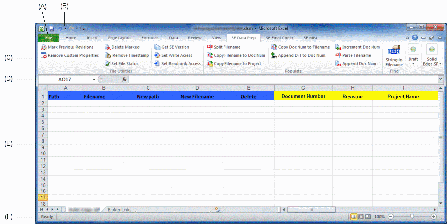
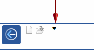

Analysis report spreadsheet
The analysis report window consists of the following areas:

- A: File menu
-
Displays the File menu, which provides access to all document-level functions, such as creating, opening, saving, and managing documents.
- B: Quick Access toolbar
-
Displays frequently used commands. Use the Customize Quick Access Toolbar arrow on the right to display additional resources.

- C: Ribbon with commands grouped on tabs
-
The ribbon is the area that contains all application commands. The commands are organized into functional groups on tabs. Some tabs are available only in certain contexts.
Some command buttons contain split buttons, corner buttons, check boxes, and other controls that display submenus and palettes.
- D: Formula bar
-
The formula bar contains the name box and the formula box. You can adjust the size of both the name box and the formula box to make it easier to view and edit a long formula or large amount of text in a cell.
- E: Spreadsheet
-
An Excel spreadsheet that displays the results of a file analysis performed on unmanaged documents. Define any custom properties before importing.
Caution:In the Teamcenter worksheet, the column headings for columns A (Path) through L (Last Saved Version) are required and should not be edited or removed.
- F: Status bar
-
Provides fast access to view-control commands—normal, page layout, and page break preview. Also contains the zoom slider.
Use the zoom slider to zoom in and out of the spreadsheet.
The tabs containing functions you will use most frequently to define or correct property data prior to importing your documents into the managed environment are: